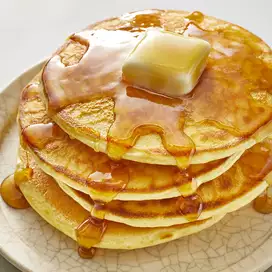

Good Old Fashioned Pancakes

Description
A flat cake, often thin and round, prepared from a
starch-based batter that may contain eggs, milk and
butter and cooked on a hot surface such as a griddle
or frying pan, often frying with oil or butter.
Ingredient
- 3/4 cup all-purpose flour
- 1/2 tablespoon and 1/4 teaspoon backing powder
- 1/8 teaspoon salt, or more to taste
- 1/2 cup and 2 tablespoons milk
- 1/2 egg
- 3/2 tablespoons butter, melted
Steps
-
In a large bowl, sift together the flour, baking
powder, salt and sugar. Make a well in the center
and pour in the milk, egg and melted butter; mix
until smooth.
-
Heat a lightly oiled griddle or frying pan over
medium-high heat. Pour or scoop the batter onto
the griddle, using approximately 1/4 cup for each
pancake. Brown on both sides and serve hot.